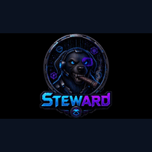

Desk Steward
Lab 3 Desk Steward — paper-desk mandate audit when desk UI/docs are touched
Desk Steward (Lab 3 Desk Steward) contributes the paper-desk mandate. When Lab 3 desk UI or docs are touched, Steward audits that the paper desk stays aligned to its mandate — Lab 3 is post-login paper, not the live homepage, and not mobile.
How Desk Steward contributes to system design
Desk Steward (Lab 3 Desk Steward) contributes the paper-desk mandate. When Lab 3 desk UI or docs are touched, Steward audits that the paper desk stays aligned to its mandate — Lab 3 is post-login paper, not the live homepage, and not mobile.
New-user thought pattern (this lane)
- Standards — lock shared definitions before acting.
- Roles — Desk Steward owns: Paper-desk mandate.
- Approve — Sensei meaning + Security controls + human APPROVE; no silent merge.
- Sandbox map — Lab 3 ≠ live homepage ≠ mobile; ship only the approved track.
- Self-improve — Standards and definitions first. Desk Steward guards the paper-desk role. Human APPROVE still required. Keep Lab 3 paper separate from live homepage and mobile. Self-improve inside the Steward lane without private desk internals in public copy.
Images (SEO filenames)

Large primary: Desk-Steward-logo.png / Desk-Steward-logo-large.png.
Lane FAQ (draft)
What is Desk Steward?
Lab 3 Desk Steward audits the paper-desk mandate when desk UI or docs are touched. Public FAQ does not include private desk mechanics.
Is Lab 3 the live homepage?
No. Lab 3 is post-login paper. Live homepage is pre-login. Mobile is a separate track.